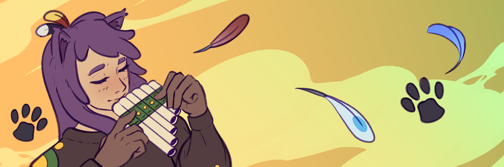
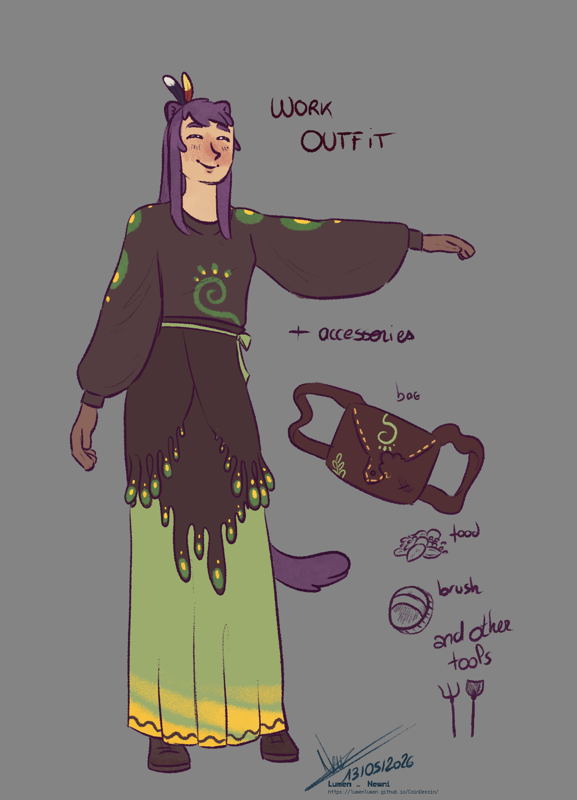
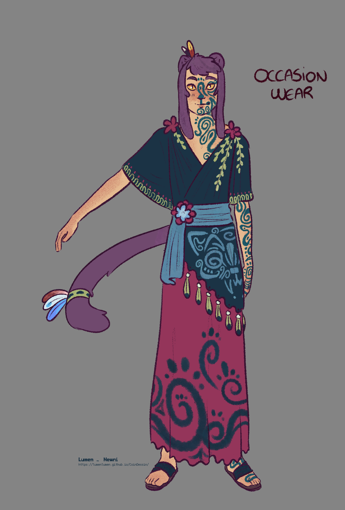
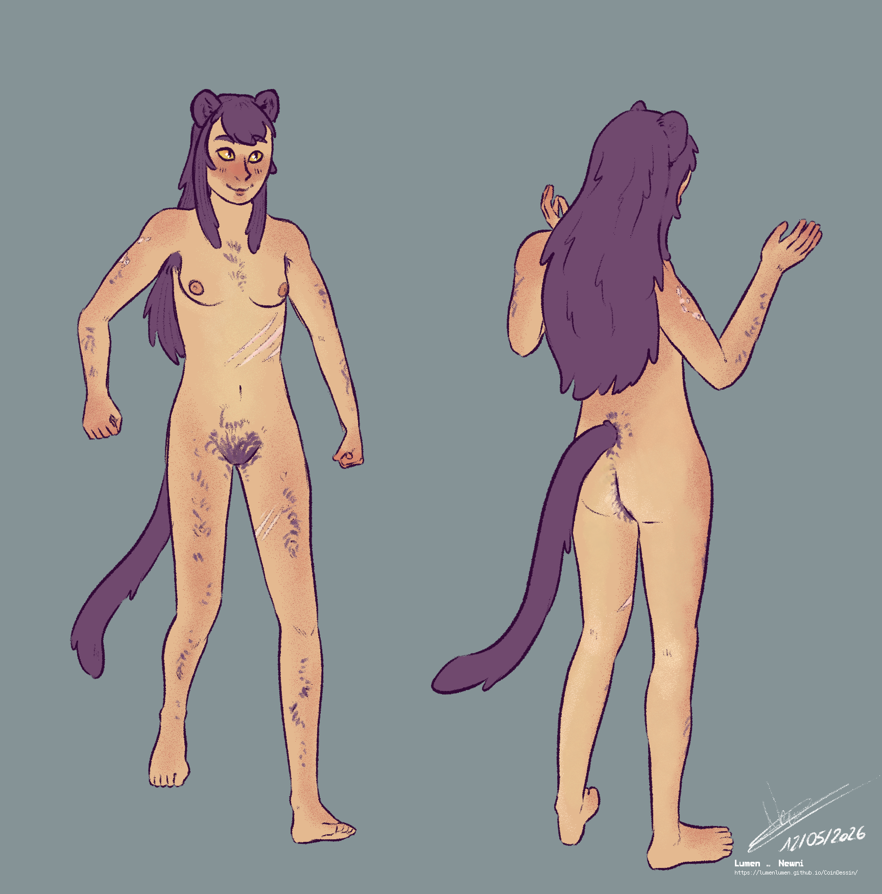

Made by ca10draws25 years old | 6'6"
Kaosa is a breeder and notably takes care of the herbalist shop's griffins. She is Ezer's sister. She has a dog named Flint.
MAGIC
Kaosa does not possess any particular magic.
NOTES
- Kaosa is a were-panther, although I have never made her panther reference sheet.
- Kaosa is energetic and welcoming. She loves company and staying active.
- Kaosa plays the pan flute.
- Kaosa loves wide open spaces and going for walks. She appreciates nature and manual activities.
IDEAS
- Kaosa running, completely happy and carefree, across the meadows. Flint can be with her.
- Kaosa preparing food for the griffins.
- Kaosa climbing a tree to look out at the landscape.
REFERENCES

Made by NewniWork outfit
Kaosa wears this outfit when she’s taking care of the griffins. They’re the ones who chewed up her bag, which she usually wears slung over her shoulder. Kaosa wears gloves to protect her hands from their beaks.

Made by NewniFestive outfit
For special occasions and ceremonies, Kaosa wears a richly patterned outfit. She likes to paint herself for the occasion, showcasing curvy, mesmerizing designs. However, she never takes off the two feathers attached to her ear, and even wears them around her tail. These three belong to Awoow, Oun, and Smala, the griffins she cares for at the herb shop.

Made by NewniNaked
Kaosa has numerous scars from her adventures as a breeder. That’s right—being able to transform into a panther doesn’t make you invulnerable! She regularly picks up scratches from the proud and sometimes brutal griffins she spends time with.
25 ans | 198 cm
Kaosa est éleveuse et s'occupe notamment des griffons de l'herboristerie. Elle est la sœur d'Ezer. Elle a un chien nommé Flint.
MAGIE
Kaosa n'a pas de magie particulière.
NOTES
- Kaosa est une panthère-garou (bien que je n'aie jamais fait sa référence de panthère).
- Kaosa est énergique et avenante. Elle aime la compagnie et le mouvement.
- Kaosa joue de la flûte de pan.
- Kaosa aime les grands espaces et se promener. Elle apprécie la nature et les activités manuelles.
IDÉES
- Kaosa court, toute heureuse et insouciante, à travers les prairies. Flint peut être avec elle.
- Kaosa prépare à manger pour les griffons.
- Kaosa grimpe dans un arbre pour observer le paysage.
RÉFÉRENCES
Tenue de travail
Kaosa porte cette tenue lorsqu'elle s'occupe des griffons. Ce sont eux qui ont croqué sa sacoche qu'elle porte généralement en bandouillère. Kaosa porte des gants pour protéger des mains des coups de bec.
Tenue de fête
Pour les grandes occasions et les cérémonies, Kaosa porte une tenue riche en motif. Elle aime se peindre pour l'occassion, arborant des formes curves et hypnotisantes. Pour autant, elle ne quitte pas les deux plumes accrochées à son oreille, et en porte même autour de sa queue. Ces trois-là sont celles de Awoow, Oun et Smala, les griffons dont elle s'occupe à l'herboristerie.
Nue
Kaosa possède de nombreuses cicatrices laissées par ses aventures d'éleveuses. Eh oui, être capable de se transformer en panthère ne rend pas invulnérable ! Elle collecte régulièrement des égratignures de la part des griffons fiers et parfois brutaux qu'elle côtoie.
TBD